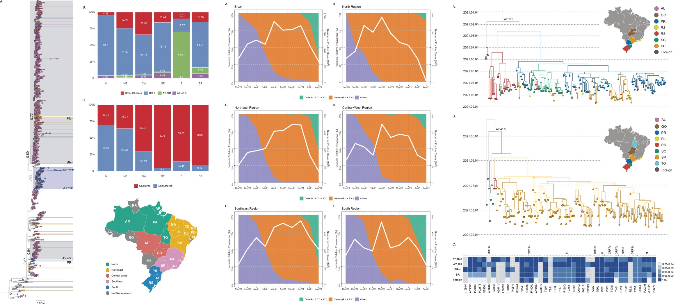
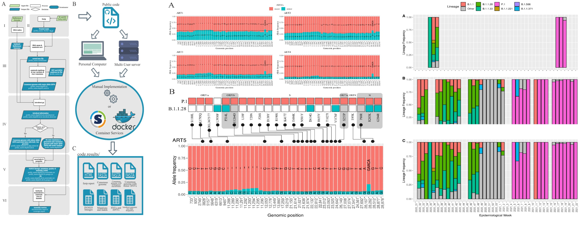
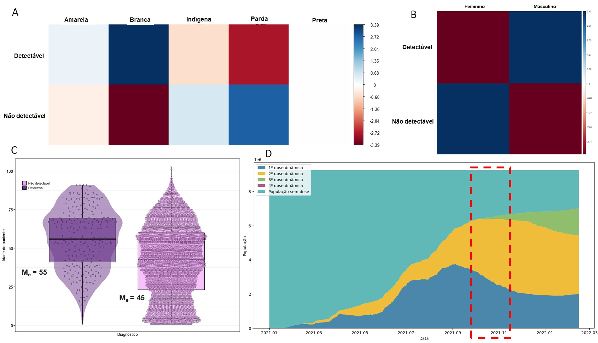
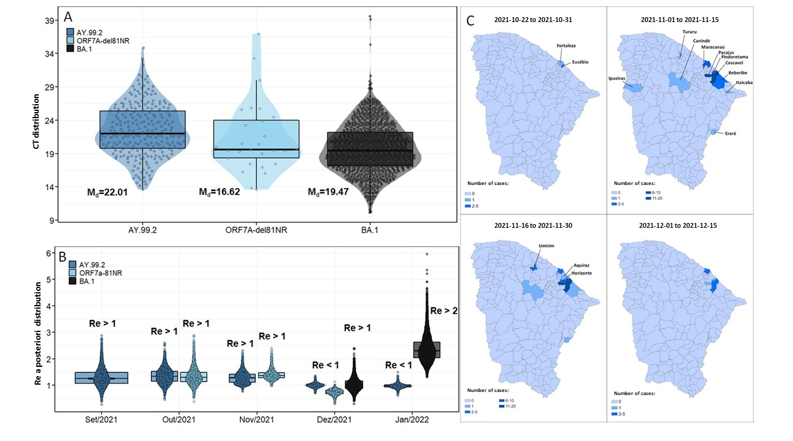
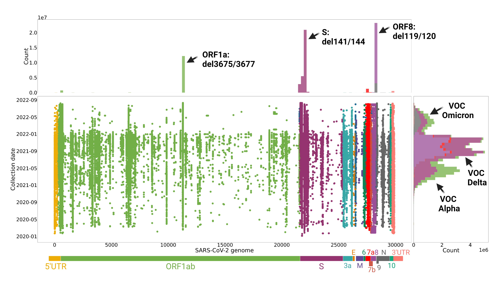
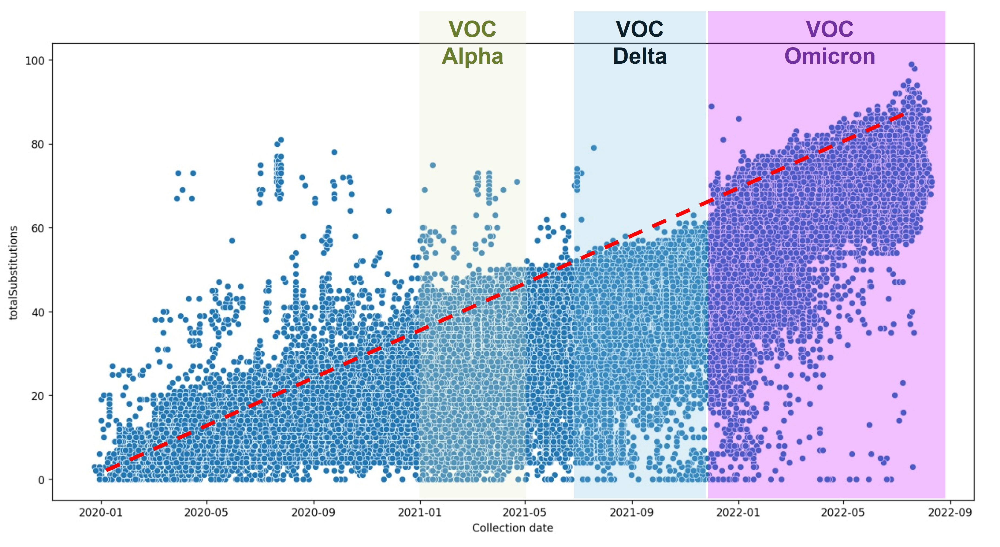

Biotechnologist, Bioinformatician, Scientist, Programmer.
About me
I'm interested in applying programming in public health, developing workflows for the automation, generation and analysis of biological data. I have a degree in Biotechnology, specializing in genomic bioinformatics. I am currently pursuing a second degree in Computer Science and a Master's degree in the field of health, with an emphasis on clinical pharmacology. I work as a Bioinformatics Analyst at the Oswaldo Cruz Foundation (Fiocruz) in Ceará.
Who am I
I am Brazilian, graduated in Biotechnology from the Federal University of Ceará (UFC) in the period 2017 - 2022. I am currently in my second degree in Computer Science from Faculdade Descomplica Digital and in the master's degree from the Graduate Program in Pharmacology, also from UFC. I have been working as a bioinformatics analyst for the Fiocruz Ceará Genomic Network since the beginning of 2021, working mainly in the assembly of respiratory virus genomes, analysis of biological data and clinical statistics.
Academic participations
Emergence and Spread of the SARS-CoV-2 Variant of Concern Delta across Different Brazilian Regions
ViralFlow: A Versatile Automated Workflow for SARS-CoV-2 Genome Assembly, Lineage Assignment, Mutations and Intrahost Variant Detection
Participation in congresses
COVID-19 variants of concern: study on the profile of carriers of the Delta variant in the state of Ceara, Brazil.
Emergency and transmission od deletions in the SARS-CoV-2 genome as indication of viral adaptation.
Evolutionary deletions in the SARS-CoV-2 genome as signature trends for viral fitness and adaptation.
Exploratory analysis of SARS-CoV-2 molecular signature profiles as evidence for a theoretical biological limit to viral evolution.
